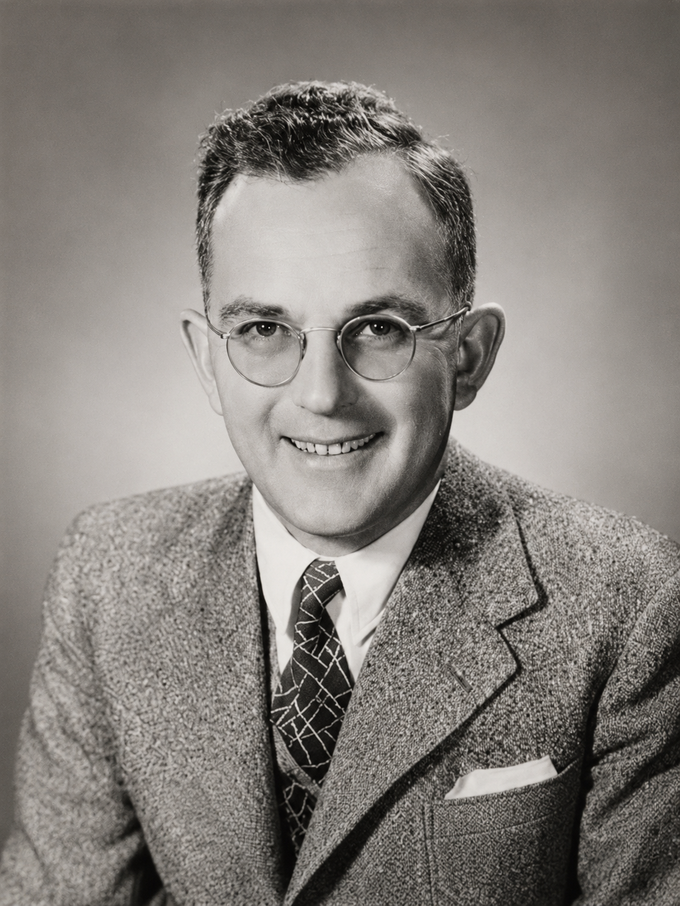
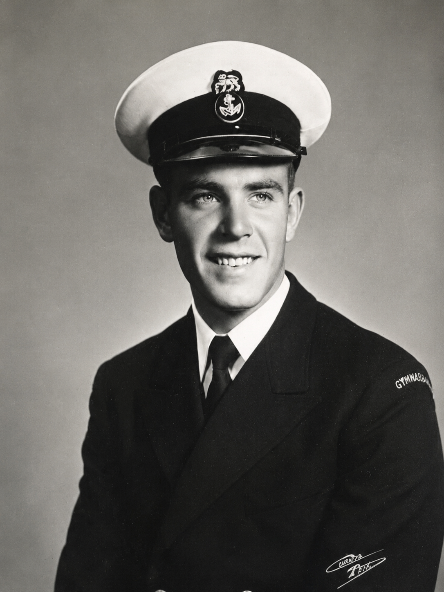
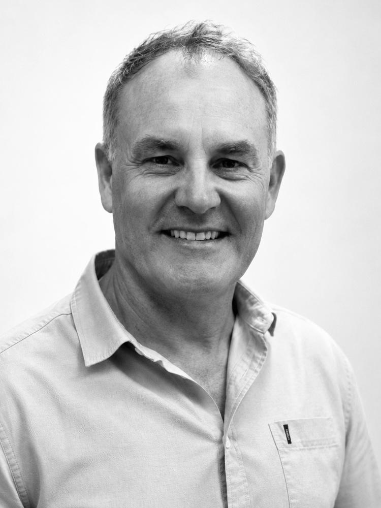

A proud family practice providing trusted, professional eye care to Bloemfontein and surrounding communities since 1939.
For more than eight decades, Trichard Optometrists has remained committed to providing exceptional eye care through clinical excellence, personalised service and a passion for protecting the vision of every patient. What began as one doctor's vision in 1939 has grown into a respected family practice that continues to serve generations of families across the Free State.
The Trichard family legacy began with Dr Gordon Trichard, born in 1912. After graduating with an MBChB from the University of Cape Town in 1936, he travelled to Oxford and Vienna where he completed his training as an Ophthalmic Surgeon. Returning to Bloemfontein in 1939, Dr Gordon Trichard established his practice and became one of South Africa's pioneering ophthalmologists. During his 36-year career he performed the first corneal graft on the African continent and later introduced pioneering laser photocoagulation techniques. His exceptional contribution to ophthalmology led to his appointment as Head of the Ophthalmic Unit in the Free State. Following his retirement, he relocated to Knysna where he continued practising for several more years.
In 1952, his brother, Dr Louis Trichard, also an Ophthalmologist, joined the practice. Together they built an outstanding reputation for excellence and compassionate patient care.
Dr Gordon's son, Rolf Trichard, qualified as an Optometrist in 1968. After beginning his career in Cape Town, he returned to Bloemfontein where he joined Koos Mellin in the well-known Mellin & Trichard partnership. In 1976, Rolf established his own independent practice under the name Trichard Optometrists, laying the foundation for the practice that continues today. In 1980, Trevor Skinner joined the practice, and together they successfully operated as Trichard & Skinner for 25 years. Rolf semi-retired in 2007 before retiring fully at the end of 2012.
The family tradition continues with Charl Trichard, who joined the practice in 1998 after serving as the National Vision Consultant to South African sports teams at the Sports Science Institute of South Africa in Cape Town. Under Charl's leadership, the practice expanded to Showgate Centre and Brandfort, continuing the family's commitment to innovation and outstanding patient care. In 2004 Charl purchased the Showgate practice, and in 2024 the practice relocated to its current home at 4 Milner Road, Waverley, Bloemfontein, where Trichard Optometrists continues to provide modern, professional eye care to patients from Bloemfontein and surrounding areas.
Complete eye examinations using modern diagnostic technology for patients of all ages.
A carefully selected range of premium frames, lenses and coatings to suit every lifestyle.
Friendly, professional advice with personalised care that has defined our practice for generations.
Our experienced team assists patients with medical aid enquiries and benefit information.
Since 1939, the Trichard family has been committed to providing exceptional eye care to the people of Bloemfontein and beyond. Through three generations, the practice has remained dedicated to clinical excellence, innovation and compassionate patient care. Today, we proudly continue that legacy while embracing modern technology and personalised service.

Born in 1912, Dr Gordon Trichard graduated with an MBChB from the University of Cape Town in 1936 before continuing his studies in Oxford and Vienna, where he qualified as an Ophthalmic Surgeon.
Returning to Bloemfontein in 1939, he established the practice and quickly became recognised as one of South Africa's pioneering ophthalmologists. During his distinguished career he performed the first corneal graft on the African continent, introduced pioneering laser photocoagulation techniques and later became Head of the Ophthalmic Unit of the Free State.
Rolf Trichard qualified as an Optometrist in 1968 and began his career in Cape Town before returning to Bloemfontein.
After practising as part of Mellin & Trichard, he established Trichard Optometrists in 1976. His dedication, professionalism and passion for patient care laid the foundation for the modern practice that continues to serve the community today.


Charl Trichard joined the family practice in 1998 after serving as the National Vision Consultant to South African sports teams at the Sports Science Institute of South Africa in Cape Town.
Under Charl's leadership, the practice expanded to Showgate Centre and Brandfort. In 2004 he purchased the Showgate practice and, in 2024, relocated Trichard Optometrists to its current home at 4 Milner Road, Waverley, Bloemfontein.
Today, Charl continues the family's tradition of providing professional, compassionate eye care while embracing the latest technology and innovations in optometry.
For more than 85 years, Trichard Optometrists has proudly cared for the vision of generations of families throughout Bloemfontein and beyond. Our commitment to excellence, innovation and personalised patient care remains as strong today as it was in 1939.
Book an Appointment